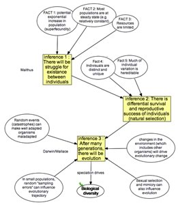

under
construction - comments welcome 
| Basic Biology Concept maps
A key element in teaching concepts (and evaluating conceptual understanding), rather than facts, is to identify what are the key concepts (and their associated misconceptions) associated with a particular topic. This is a critical (and often difficult) first step in focusing the course on what fundamental ideas - nevertheless, it is a useful way to identify what is important and what is not. We are very interested in your comments and suggestions - email us. |
 |
Topics: Scientific method | Basic Cell, Molecular & Evolutionary Biology | Developmental Biology |
notes: the icon indicates that there is a layer underneath, use your browser's back arrow to go back! |
under
construction - comments welcome |